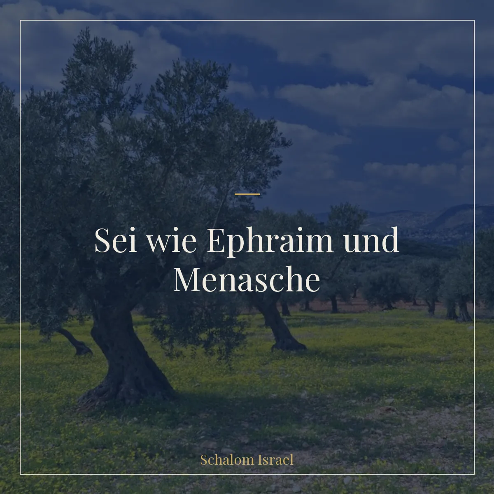
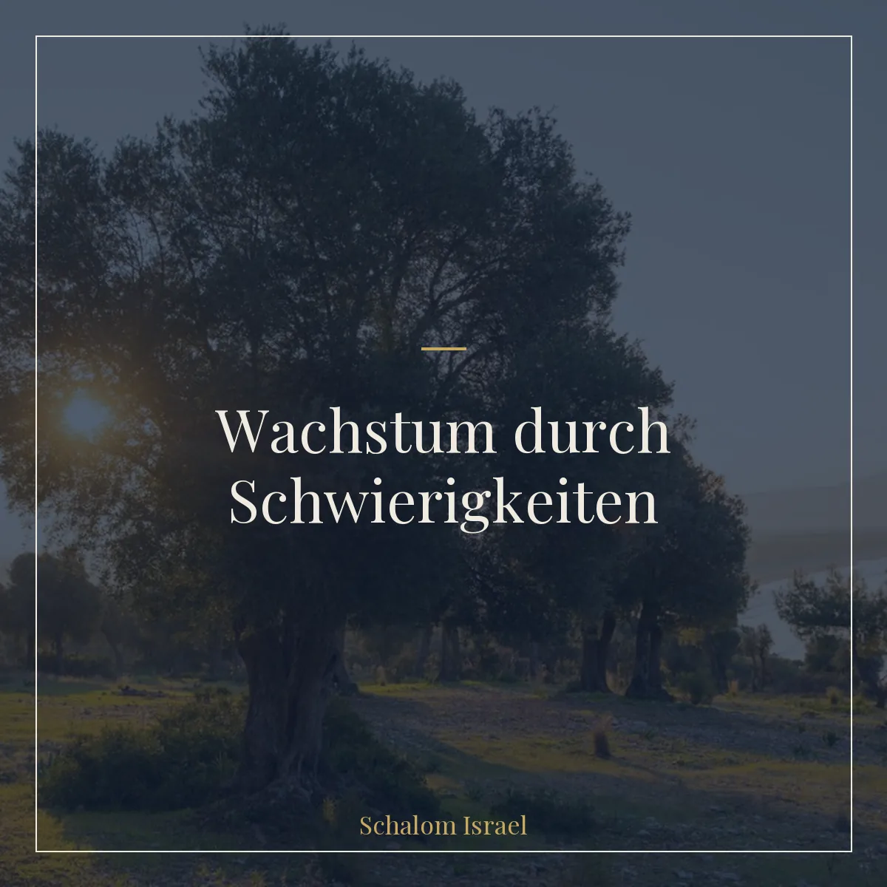
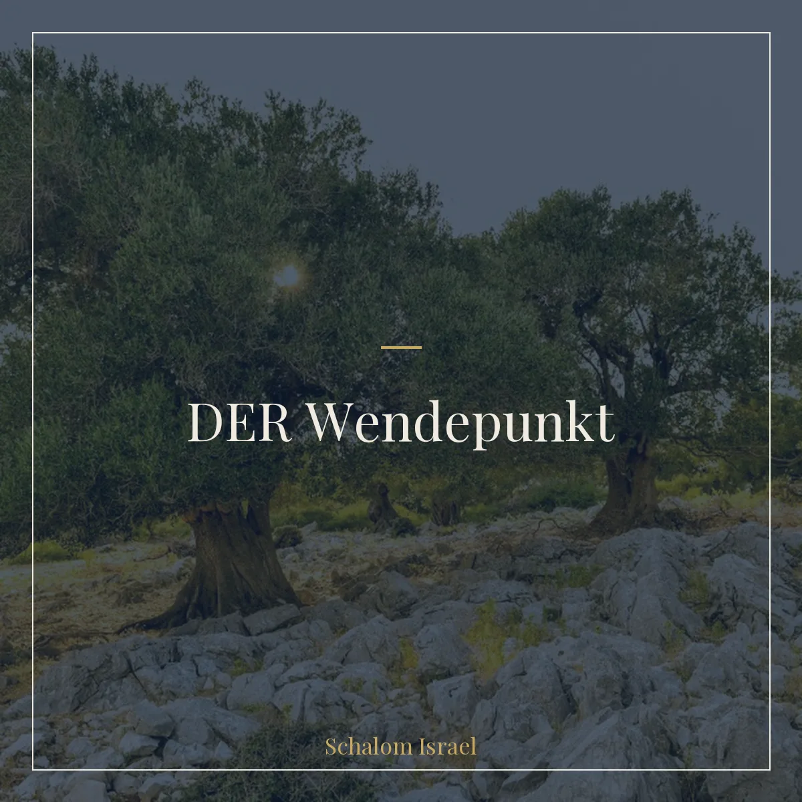
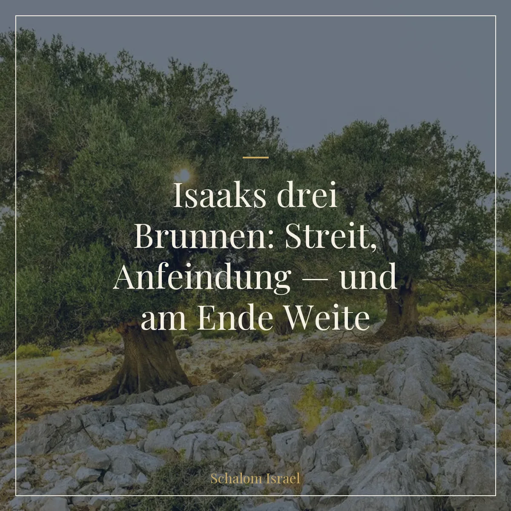
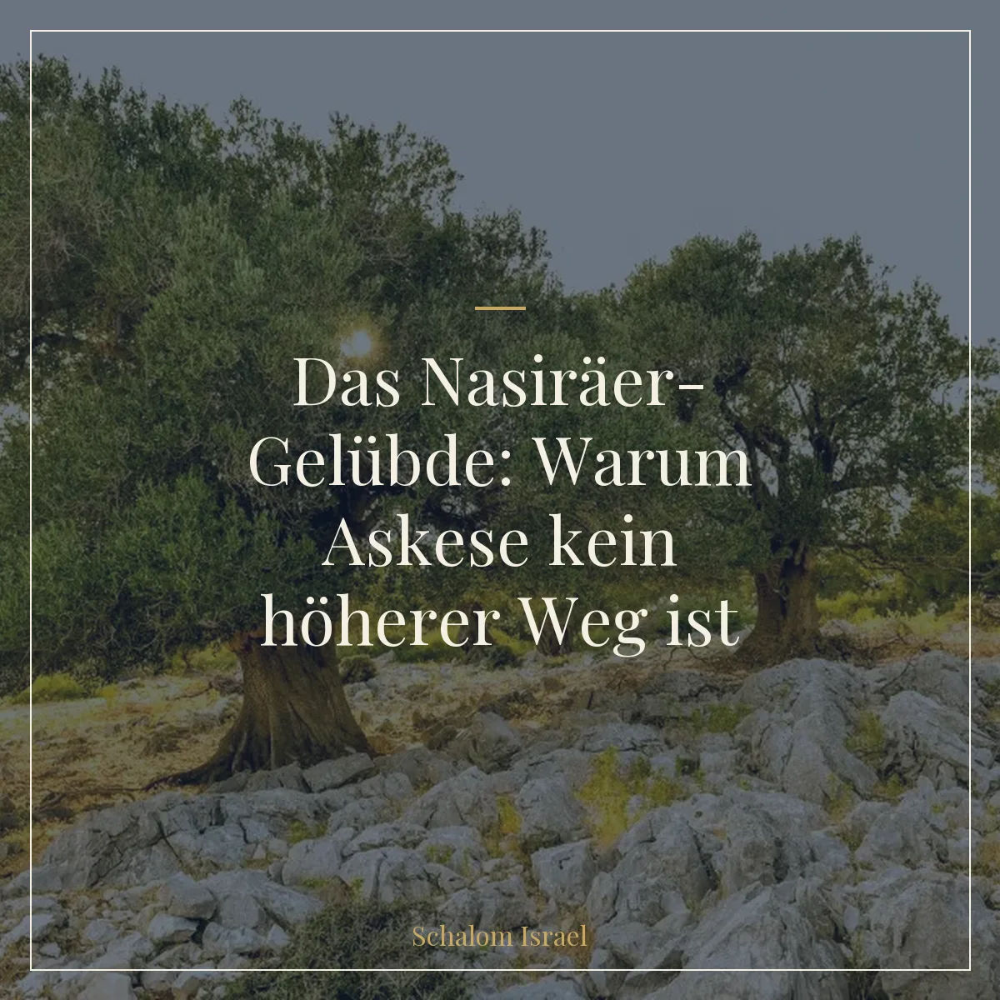
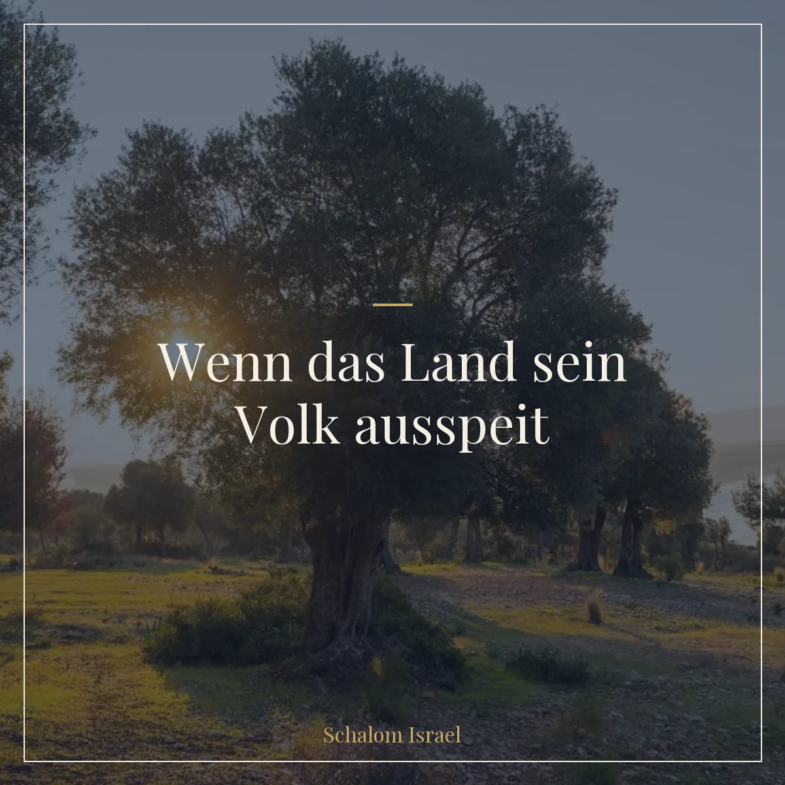

Vor dem Blinden – das Gebot, das keiner sieht
„Vor den Blinden keinen Anstoß legen" – das klingt wie ein Vers für Sehende, die niemals jemandem schaden würden. Doch genau das ist der Trick der Torah.
Beitrag lesenGedanken zu Israel, Gottes Wort und deinem Alltag.
„Vor den Blinden keinen Anstoß legen" – das klingt wie ein Vers für Sehende, die niemals jemandem schaden würden. Doch genau das ist der Trick der Torah.
Beitrag lesenAm Jom Kippur werden zwei Ziegenböcke gebracht – einer geopfert, einer in die Wüste geschickt. Warum zwei? Was die Torah über Umkehr sagt, das wir oft übersehen.
Beitrag lesenSieben Tage, sieben Facetten von Tiferet. Von Harmonie, die liebt, bis zur Harmonie, die ausstrahlt – eine Reise durch die dritte Woche der Omer-Zeit.
Beitrag lesenTzaraat ist keine Lepra. Es ist ein spiritueller Zustand, der sich am Körper zeigt. Was Parascha Tazria über Einsamkeit, Selbstreflexion und die ehrliche Begegnung mit sich selbst lehrt.
Beitrag lesenSieben Tage, sieben Facetten der Stärke. Von Stärke, die liebt, bis zur Stärke, die prägt – eine Reise durch die zweite Woche der Omer-Zeit.
Beitrag lesenSieben Tage, sieben Facetten der Güte. Von Güte in ihrer reinsten Form bis zur Güte, die Würde trägt – eine Reise durch die erste Woche der Omer-Zeit.
Beitrag lesenFreiheit ist kein Ziel – sie ist ein Anfang. Was Parashat Schemini nach Pessach darüber sagt, was mit unserer Freiheit geschieht, wenn wir sie nicht bewusst füllen.
Beitrag lesenIn 3. Mose 11,42 verbirgt sich der mittlere Buchstabe der gesamten Torah – ein ungewöhnlich großes Waw. Was dieser eine Buchstabe über Verbindung, Heiligkeit und unsere Wahl sagt.
Beitrag lesenMeine Frau saß neben mir in der Warteschlange – und plötzlich sagte sie: „Hamtana... matana. Hörst du das?" Warten und Geschenk. Im Hebräischen liegt das eine buchstäblich im anderen.
Beitrag lesenWer die letzten Kapitel des Buches Schemot liest, dem fällt schnell etwas auf: Derselbe Satz taucht immer und immer wieder auf – „wie der Ewige Mosche geboten hatte." Achtzehn Mal.
Beitrag lesenWer eine Torah-Rolle zum ersten Mal in der Hand hält, ist oft überrascht. Keine Vokale, keine Satzzeichen, nur Konsonanten. Und doch: Manche Buchstaben sind größer als die anderen.
Beitrag lesenWarum komme ich nicht voran – obwohl ich es doch wirklich will? Die Antwort findet sich tiefer, als wir denken.
Beitrag lesen
Es gibt Segenssätze, die klingen schön. Und es gibt Segenssätze, die tragen eine ganze Lebensphilosophie in sich.
Beitrag lesenNachdem Jakob gestorben ist, kehrt die Angst bei Josefs Brüdern zurück. Ist eine Versöhnung wirklich echt – oder nur eine Pause?
Beitrag lesenJosef und seine Brüder finden wieder zueinander. Doch warum spielt Josef dieses Spiel? Warum gibt er sich nicht direkt zu erkennen?
Beitrag lesenBenjamin verlor seinen Bruder Josef. Wie er damit umging, lässt sich an einer ungewöhnlichen Stelle entdecken: in einer Namensliste.
Beitrag lesenSara lacht. Still, bei sich. Das Lachen eines Menschen zwischen Glauben und Enttäuschung. Was Gott mit diesem Lachen macht, ist eine der schönsten Lektionen der ganzen Bibel.
Beitrag lesenEin alter, blinder Isaak. Zwei Söhne. Eine Mutter, die einen Plan schmiedet. Warum tut Rebekka das – und warum ist am Ende nur Esau wütend?
Beitrag lesenGott gibt Abraham eine unglaubliche Verheißung. Und dann passiert – 25 Jahre lang – scheinbar nichts. Warum tut er das?
Beitrag lesen
Josef wird verraten, als Sklave verkauft, zu Unrecht ins Gefängnis geworfen. Was sich wie ein Absturz anfühlt, ist in Wahrheit eine Vorbereitung.
Beitrag lesenWarum schafft es Juda, Jakobs Vertrauen zu gewinnen – während Ruben scheitert? Manchmal entstehen aus unseren schwersten Erfahrungen unsere wichtigsten Aufgaben.
Beitrag lesen
Josef sitzt im Gefängnis. Alles scheint verloren. Und dann fragt er zwei Mitgefangene: „Warum seid ihr heute so traurig?" Es ist dieser kleine Moment, der alles verändert.
Beitrag lesenWarum die größten Persönlichkeiten der Bibel auf Kinder warten mussten – und was das mit deinem Warten heute zu tun hat. Eine andere Perspektive auf Lech Lecha.
Beitrag lesenVier Schichten echter Dankbarkeit aus dem Ritual der Erstlingsfrüchte. Warum „Danke" sagen oft zu wenig ist – und was die Tora stattdessen zeigt.
Beitrag lesenEin seltsamer Vers in Ki Teize verbietet Spenden aus unehrlich verdientem Geld. Was er uns über Heiligkeit, Ethik und echte Wiedergutmachung lehrt.
Beitrag lesenFünf hebräische Worte aus 5.Mo 18,13 verändern den Blick auf Sorge und Zukunft: ungeteiltes Vertrauen statt Wahrsagerei. Was „tamim" wirklich bedeutet.
Beitrag lesen„Gerechtigkeit, Gerechtigkeit sollst du verfolgen." Warum die Wiederholung kein Zufall ist – und was sie über Eigeninitiative und Verantwortung sagt.
Beitrag lesenEin Interview über Talmud, mündliche Tora und „menschengemachte Gebote". Rabbi Yitzhak räumt mit verbreiteten Missverständnissen auf.
Beitrag lesenWarum Gott einem versklavten Volk als allererstes Gebot ausgerechnet einen eigenen Kalender gibt. Eine Lektion über Zeit, Identität und Freiheit.
Beitrag lesenEine zweite Lesart der Plagen: Sie spiegeln die Schöpfungsordnung — nur in umgekehrter Richtung. Was das über Götzendienst und göttliche Macht zeigt.
Beitrag lesenJakobs Abschiedsworte sind keine Lobeshymnen, sondern ehrliche Kritik. Wie sie zeigen, dass echte Liebe Wahrheit aushält — und braucht.
Beitrag lesenWie Juda nach dem Verlust seines eigenen Sohnes lernt, was Verantwortung wirklich bedeutet. Und warum gerade er zum Anführer der Brüder wird.
Beitrag lesen
Isaak gräbt drei Brunnen — Esek, Sitnah, Rechobot. Was Streit, Anfeindung und Weite über Geduld und über das Loslassen erzählen.
Beitrag lesen70 Nachkommen Noachs, 70 Sukkot-Opfer, ein einziges Opfer am achten Tag. Was diese Zahlen über Israel, die Völker und Schemini Atzeret sagen.
Beitrag lesenEine einfache Sicherheitsvorschrift in Ki Tawo verbirgt eine starke Lehre: Sei nicht der, durch den Unheil kommt — sei der, durch den Gutes geschieht.
Beitrag lesenDie Wochenlesung Ekew zeigt: Gott leitet alle Geschicke. Vier Glaubens-Level, die unser Vertrauen Schritt für Schritt vertiefen.
Beitrag lesenMose bittet inständig, das Land zu betreten. Gott sagt nein. Was diese eine Antwort über Gebet, Vertrauen und die Tiefe der Beziehung zu Gott zeigt.
Beitrag lesen„Aber die Söhne Korachs starben nicht." Ein Halbsatz, der zeigt, was es bedeutet, sich der eigenen Familie entgegenzustellen – und wie Gott das belohnt.
Beitrag lesenDie rote Kuh ist ein Paradox: Sie reinigt – und macht gleichzeitig unrein. Was dieses Chukim-Gebot über Gottes Perspektive lehrt.
Beitrag lesenKorach zettelt eine Rebellion an. Doch hinter seinen schönen Argumenten stecken Neid und Missgunst – und beides führt unausweichlich in die Tiefe.
Beitrag lesenZehn von zwölf Kundschaftern reden schlecht über das Land Israel. Was passiert, wenn ein Volk seine eigenen Worte als Urteil gegen sich gelten lassen muss.
Beitrag lesen
Warum musste der Nasiräer am Ende seines Gelübdes ein Sündopfer bringen? Drei Erklärungen – und eine, die das Verständnis von Heiligkeit umkehrt.
Beitrag lesenIm Hebräischen gibt es kein Wort für „haben". Was Schmita und Yovel über Besitz, Verantwortung und die Beziehung zum Land Israel sagen.
Beitrag lesen
Was die Torah vom „Ausspeien" des Landes sagt – und warum Israel eine Gesetzmäßigkeit kennt, die kein anderes Land der Welt hat.
Beitrag lesen„Ihr sollt nicht tun, was man in Ägypten tut." Was Acharej Mot über Identität, Heiligkeit und den Mut zum Anders-Sein sagt.
Beitrag lesenBezaleel baut die Stiftshütte – aber wann hat Gott ihn dazu berufen? Eine Antwort, die zeigt, wo Berufung wirklich liegt: in dem, was schon in dir ist.
Beitrag lesenDas Volk fällt am Sinai – und Gott vergibt. Was Ki Tissa über Umkehr, Fürbitte und die Begegnung mit Gott sagt, die uns für immer prägt.
Beitrag lesenDie Sieben-Tage-Woche hat keinen Bezug zur Natur. Trotzdem ist sie weltweit verbreitet. Warum die Schöpfungs-Ordnung tiefer geht, als wir denken.
Beitrag lesenFünf Stationen, eine Lektion: Wie das Volk Israel im Wochenabschnitt Beschallach lernt, sich nicht zu beklagen, sondern zu beten.
Beitrag lesenIn drei Stufen entlarvt der Ewige im Wochenabschnitt Bo den Götzen der Schafe. Eine Geschichte über Götzendienst, Pessach und die Befreiung eines ganzen Volkes.
Beitrag lesenDie zehn Plagen sind weit mehr als ein Bestrafungskatalog. Acht Hintergründe aus jüdischer Tradition und hebräischer Sprache, die alles in neuem Licht zeigen.
Beitrag lesenZu dieser Parascha gibt es noch keinen Beitrag.